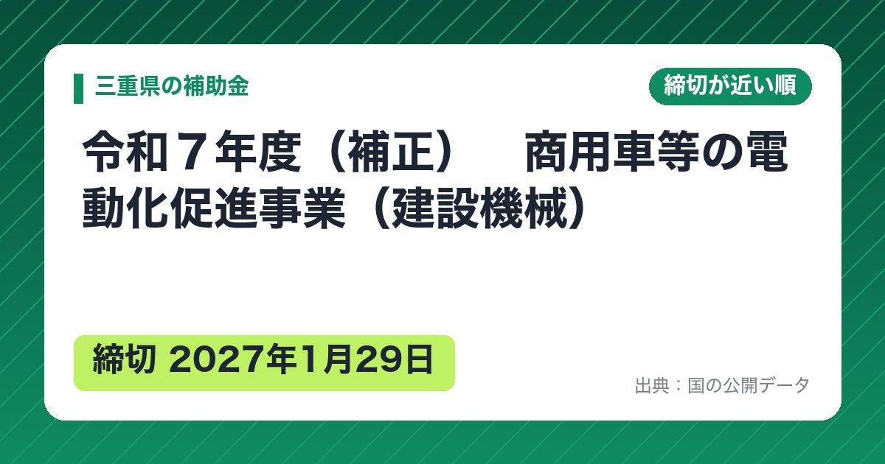

令和７年度（補正） 商用車等の電動化促進事業（建設機械）

締切 2027年1月29日｜上限 14.31億円
２０５０年カ－ボンニュ－トラルの達成を目指し、建設機械の電動化を支援します。
概要
| 対象地域 | 全国 / 北海道 / 青森県 / 岩手県 / 宮城県 / 秋田県 / 山形県 / 福島県 / 茨城県 / 栃木県 / 群馬県 / 埼玉県 / 千葉県 / 東京都 / 神奈川県 / 新潟県 / 山梨県 / 長野県 / 富山県 / 石川県 / 福井県 / 岐阜県 / 静岡県 / 愛知県 / 三重県 / 滋賀県 / 京都府 / 大阪府 / 兵庫県 / 奈良県 / 和歌山県 / 鳥取県 / 島根県 / 岡山県 / 広島県 / 山口県 / 徳島県 / 香川県 / 愛媛県 / 高知県 / 福岡県 / 佐賀県 / 長崎県 / 熊本県 / 大分県 / 宮崎県 / 鹿児島県 / 沖縄県 |
|---|---|
| 補助上限額 | 14.31億円 |
| 補助率 | 差額の2/3、本体価格の1/2 公募要領参照 |
| 受付期間 | 2026年3月19日 〜 2027年1月29日 |
| 対象の従業員数 | 従業員数の制約なし |
| 利用目的 | 新たな事業を行いたい / イベント・事業運営支援がほしい / 事業を引き継ぎたい / 研究開発・実証事業を行いたい / 人材育成を行いたい / 資金繰りを改善したい / 雇用・職場環境を改善したい / 災害（自然災害、感染症等）支援がほしい / 安全・防災対策支援がほしい / まちづくり・地域振興支援がほしい / 設備整備・IT導入をしたい / エコ・SDGs活動支援がほしい |
| 対象業種 | 漁業 / 建設業 / 製造業 / 電気・ガス・熱供給・水道業 / 情報通信業 / 複合サービス事業 / サービス業（他に分類されないもの） / 公務（他に分類されるものを除く） / 分類不能の産業 / 農業、林業 / 鉱業、採石業、砂利採取業 / 運輸業、郵便業 / 卸売業、小売業 / 金融業、保険業 / 不動産業、物品賃貸業 / 学術研究、専門・技術サービス業 / 宿泊業、飲食サービス業 / 生活関連サービス業、娯楽業 / 教育、学習支援業 / 医療、福祉 |
| 実施機関 | 脱炭素成長型経済構造移行推進対策費補助金 |
公募の内容（原文の抜粋）
■背景・目的
建設機械の電動化は、建設現場におけるCO2排出量の削減だけでなく、静粛化による
騒音抑制とそれに伴う作業時間の拡大、排気ガスが抑えられることにより閉所空間等
での作業が可能になる等様々なメリットがある。ただし、その導入に当たっては、
既存建設機械と比べ本体価格が相当程度高価になることや、あわせて充電設備を整備
することが必要となるため、導入初期におけるコストが高いことがネックとなっており、
普及が進まない現状がある。
そのため、本事業では、一定の水準以上を有すると認められるGX建設機械等を対象
として、その導入コストの一部を補助することにより、GX建設機械の普及促進や将来的
なコスト低減を図る。
※GX建設機械：建設施工現場における電動建機の普及を促進し、脱炭素化を図るため、
国土交通省が創設したGX建設機械認定制度の認定を受けた電動建機をいう。
■応募資格
補助対象事業者
・民間企業、個人事業主
・ 独立行政法人通則法(平成１１年法律第１０３号)第２条第１項に規定する独立行政法人
・一般社団法人・一般財団法人及び公益社団法人・公益財団法人
・地方公共団体
・その他環境大臣の承認を経て協会が認める者
■補助対象機械
・交付決定後に購入契約をする未使用のGX建設機械が対象。
・GX建設機械と、GX建設機械に充電する装置としてGX建設機械を製造する会社が認め、
導入するGX建設機械と一体的に導入する可搬式充電設備であること。
・建設機械１台に対して充電設備１台以下であること。
・道路運送車両法による自動車検査登録制度において、令和８年２月２日から令和９年1月29日までの
期間に申請者が車検証の所有者として新車登録されたGX建設機械
※その他の要件や詳細については「公募要領」を参照してください。
■公募期間
・2026年3月19日(木)～2027年1月29日(金)
※申請書類作成にあたっては、日本建設機械施工協会ホームページより「申請書類」をダウンロードしてください。
すべての必要書類を準備いただき申請してください。
■問合せ先
一般社団法人日本建設機械施工協会 「商用車等の電動化促進事業（建設機械）」 事務局
E-mail: jcma_hojyo@jcmanet.or.jp
■参照URL
https://jcmanet.or.jp/hojojigyo-top/hojojigyo_r7_hosei/
三重県のほかの補助金
- 四日市市中小企業脱炭素経営支援事業費補助金（締切 2027年3月31日）
- 四日市市燃料電池自動車導入促進補助金（締切 2027年3月31日）
- 携帯電話等エリア整備事業（締切 2027年3月31日）
- 電波遮へい対策事業（トンネル）（締切 2027年3月31日）
- 【三重県 鈴鹿市】令和8年度創業促進補助金（締切 2027年3月31日）